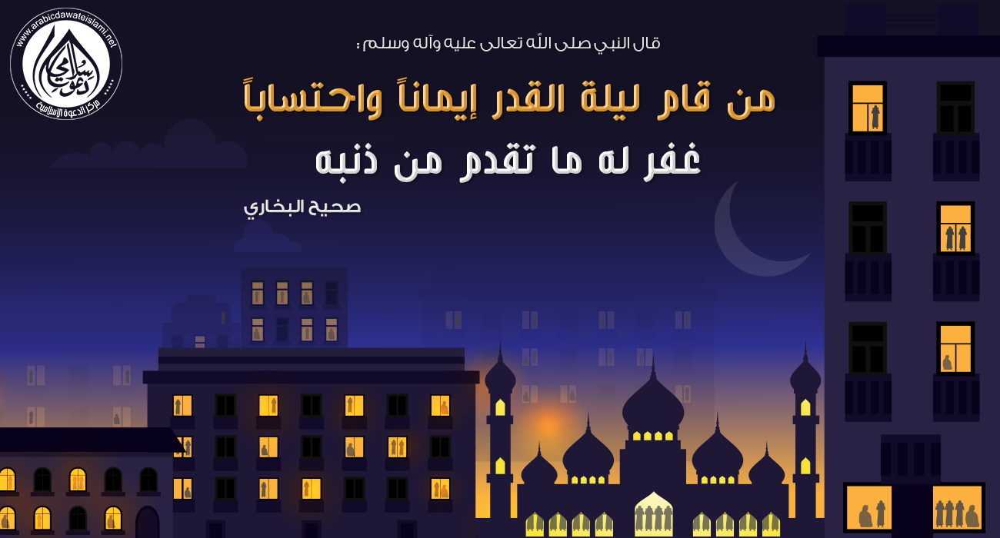
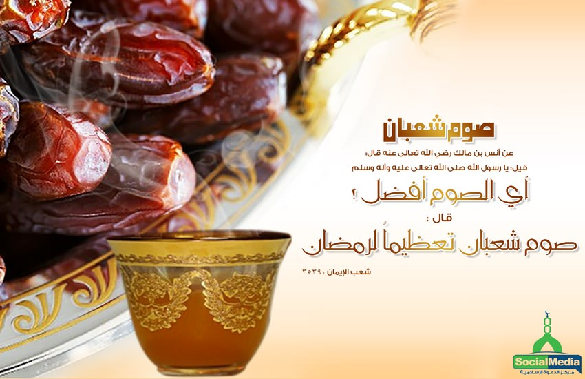
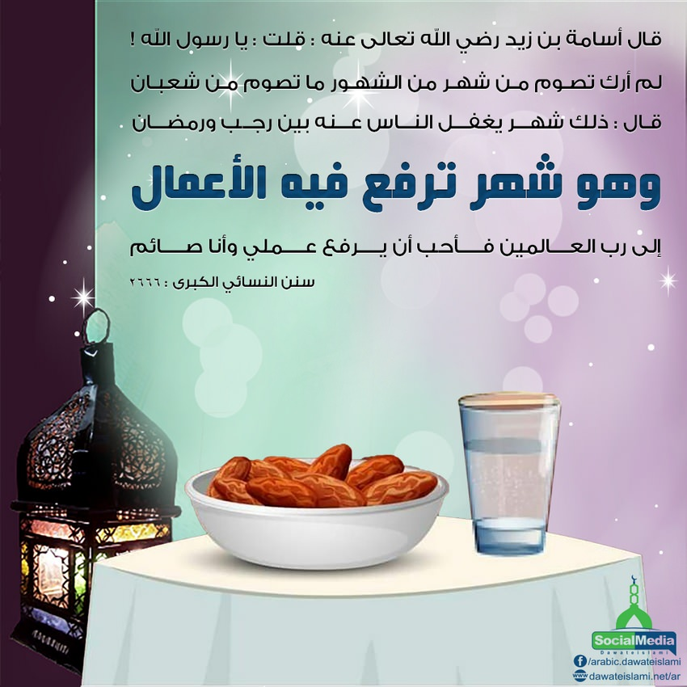
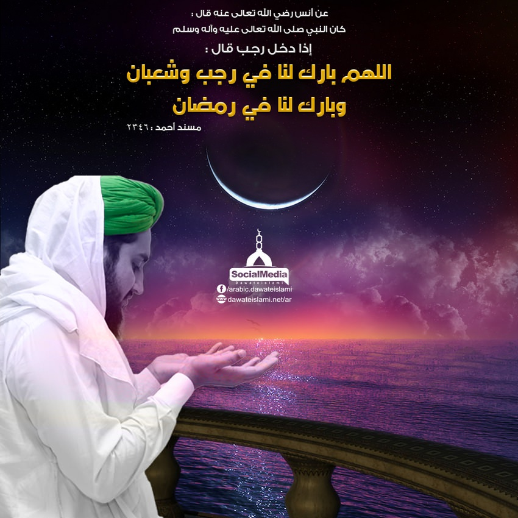

1
2
3
4
لقد امتن الله علينا بأن أعطانا شهر رمضان، وخصه بخصائص عظيمة، وميزه بفضائل جليلة، منها أنه: شهر الخير والبركة، شهر الجود والإحسان،
ومضاعفة الأجر والثواب، من تقرب فيه بخصلة من الخير، كان كمن أدى فريضة فيما سواه ومن أدى فيه فريضة كان كمن أدى سبعين
فريضة فيما سواه، وهذا شهر يعد فيه نوم الصائم عبادة وهذا شهر تؤمن فيه الملائكة من حملة العرش، على دعاء الصائمين، وهذا
شهر تفتح فيه أبواب الجنان وتغلق فيه أبواب النيران وجاء في الحديث الشريف: أن النبي صلى الله عليه وآله وسلم قال: إذا
جاء رمضان، فتحت أبواب الجنة، وغلقت أبواب النار، وصفدت الشياطين.
صحيح مسلم:
١٠٧٩
ومن هنا كان لمركز الدعوة الإسلامية الاهتمام الكبير بهذا الشهر المبارك، فبحمد الله تعالى يعقد الاعتكاف الجماعي
الكبير في مسجد "فيضان مدينة" في كراتشي تحت إشرافه، من أول يوم في رمضان حتى آخره، ويقوم المركز بتنظيم أمور الاعتكاف
كاملة:
لهذا ندعوكم إلى الاعتكاف معنا في مركز الدعوة الإسلامية، حتى تلتمسوا معنا تلك البركات والنفحات العطرة، خاصة بحضور مؤسس المركز فضيلة الشيخ محمد إلياس العطار القادري حفظه الله تعالى
أنهى النبي -ﷺ- كافة الاستعدادات لغزو مكة المكرمة، في أول رمضان، من السنة الثامنة هجرية، وأخفى الأمر، حتى عن أقرب الناس إليه؛ خشية تسرب الأخبار إلى كفار قريش، فيستعدوا لمواجهته -ﷺ-، وبعث أبا قتادة الأنصاري -رضي الله عنه- على رأس ثمانية نفر، من جملتهم: محلم بن جثامة الليثي، إلى بطن أضم، كل ذلك زيادة في تعتيم الخبر؛ ولكي يتوهم الأعداء أن النبي -صلى الله عليه وسلم- يستعد في المدينة لغزو الجهة التي سارت إليها سرية أبي قتادة، وكان في السرية: محلم بن جثامة الليثي، فمرّ عامر بن الأضبط الأشجعي، فسلَّم بتحية الإسلام، فأمسك عنه القوم، وحمل عليه محلم بن جثامة، فقتله، وسلبه متاعه، وبعيره، ووطب لبنٍ كان معه، فلما لحقوا بالنبي -ﷺ- نزل فيهم القرآن: يَا أَيُّهَا الَّذِينَ آمَنُوا إِذَا ضَرَبْتُمْ فِي سَبِيلِ اللَّهِ فَتَبَيَّنُوا وَلَا تَقُولُوا لِمَنْ أَلْقَى إِلَيْكُمُ السَّلَامَ لَسْتَ مُؤْمِنًا تَبْتَغُونَ عَرَضَ الْحَيَاةِ الدُّنْيَا فَعِنْدَ اللَّهِ مَغَانِمُ كَثِيرَةٌ[النساء:94]… إلى آخر الآية [عيون الأثر (2/207) وغزوات النبي -ﷺ- (ص:122)].
أنهى النبي -ﷺ- كافة الاستعدادات لغزو مكة المكرمة، في أول رمضان، من السنة الثامنة هجرية، وأخفى الأمر، حتى عن أقرب الناس إليه؛ خشية تسرب الأخبار إلى كفار قريش، فيستعدوا لمواجهته -ﷺ-، وبعث أبا قتادة الأنصاري -رضي الله عنه- على رأس ثمانية نفر، من جملتهم: محلم بن جثامة الليثي، إلى بطن أضم، كل ذلك زيادة في تعتيم الخبر؛ ولكي يتوهم الأعداء أن النبي -صلى الله عليه وسلم- يستعد في المدينة لغزو الجهة التي سارت إليها سرية أبي قتادة، وكان في السرية: محلم بن جثامة الليثي، فمرّ عامر بن الأضبط الأشجعي، فسلَّم بتحية الإسلام، فأمسك عنه القوم، وحمل عليه محلم بن جثامة، فقتله، وسلبه متاعه، وبعيره، ووطب لبنٍ كان معه، فلما لحقوا بالنبي -ﷺ- نزل فيهم القرآن: يَا أَيُّهَا الَّذِينَ آمَنُوا إِذَا ضَرَبْتُمْ فِي سَبِيلِ اللَّهِ فَتَبَيَّنُوا وَلَا تَقُولُوا لِمَنْ أَلْقَى إِلَيْكُمُ السَّلَامَ لَسْتَ مُؤْمِنًا تَبْتَغُونَ عَرَضَ الْحَيَاةِ الدُّنْيَا فَعِنْدَ اللَّهِ مَغَانِمُ كَثِيرَةٌ[النساء:94]… إلى آخر الآية [عيون الأثر (2/207) وغزوات النبي -ﷺ- (ص:122)].
أنهى النبي -ﷺ- كافة الاستعدادات لغزو مكة المكرمة، في أول رمضان، من السنة الثامنة هجرية، وأخفى الأمر، حتى عن أقرب الناس إليه؛ خشية تسرب الأخبار إلى كفار قريش، فيستعدوا لمواجهته -ﷺ-، وبعث أبا قتادة الأنصاري -رضي الله عنه- على رأس ثمانية نفر، من جملتهم: محلم بن جثامة الليثي، إلى بطن أضم، كل ذلك زيادة في تعتيم الخبر؛ ولكي يتوهم الأعداء أن النبي -صلى الله عليه وسلم- يستعد في المدينة لغزو الجهة التي سارت إليها سرية أبي قتادة، وكان في السرية: محلم بن جثامة الليثي، فمرّ عامر بن الأضبط الأشجعي، فسلَّم بتحية الإسلام، فأمسك عنه القوم، وحمل عليه محلم بن جثامة، فقتله، وسلبه متاعه، وبعيره، ووطب لبنٍ كان معه، فلما لحقوا بالنبي -ﷺ- نزل فيهم القرآن: يَا أَيُّهَا الَّذِينَ آمَنُوا إِذَا ضَرَبْتُمْ فِي سَبِيلِ اللَّهِ فَتَبَيَّنُوا وَلَا تَقُولُوا لِمَنْ أَلْقَى إِلَيْكُمُ السَّلَامَ لَسْتَ مُؤْمِنًا تَبْتَغُونَ عَرَضَ الْحَيَاةِ الدُّنْيَا فَعِنْدَ اللَّهِ مَغَانِمُ كَثِيرَةٌ[النساء:94]… إلى آخر الآية [عيون الأثر (2/207) وغزوات النبي -ﷺ- (ص:122)].
أنهى النبي -ﷺ- كافة الاستعدادات لغزو مكة المكرمة، في أول رمضان، من السنة الثامنة هجرية، وأخفى الأمر، حتى عن أقرب الناس إليه؛ خشية تسرب الأخبار إلى كفار قريش، فيستعدوا لمواجهته -ﷺ-، وبعث أبا قتادة الأنصاري -رضي الله عنه- على رأس ثمانية نفر، من جملتهم: محلم بن جثامة الليثي، إلى بطن أضم، كل ذلك زيادة في تعتيم الخبر؛ ولكي يتوهم الأعداء أن النبي -صلى الله عليه وسلم- يستعد في المدينة لغزو الجهة التي سارت إليها سرية أبي قتادة، وكان في السرية: محلم بن جثامة الليثي، فمرّ عامر بن الأضبط الأشجعي، فسلَّم بتحية الإسلام، فأمسك عنه القوم، وحمل عليه محلم بن جثامة، فقتله، وسلبه متاعه، وبعيره، ووطب لبنٍ كان معه، فلما لحقوا بالنبي -ﷺ- نزل فيهم القرآن: يَا أَيُّهَا الَّذِينَ آمَنُوا إِذَا ضَرَبْتُمْ فِي سَبِيلِ اللَّهِ فَتَبَيَّنُوا وَلَا تَقُولُوا لِمَنْ أَلْقَى إِلَيْكُمُ السَّلَامَ لَسْتَ مُؤْمِنًا تَبْتَغُونَ عَرَضَ الْحَيَاةِ الدُّنْيَا فَعِنْدَ اللَّهِ مَغَانِمُ كَثِيرَةٌ[النساء:94]… إلى آخر الآية [عيون الأثر (2/207) وغزوات النبي -ﷺ- (ص:122)].

قال النبي صلى الله تعالى عليه وآله وسلم: إن الله عز وجل وملائكته يُصلُّون على المتَسَحِّرِين مسند الإمام أحمد
قال رسول الله صلى الله تعالى عليه وآله وسلم: إن لله عز وجل عند كل فطر عتقاء مسند الإمام أحمد
إن من أبرز نِعَمِ الله تعالى على أمة الحبيب محمد صلى الله تعالى عليه وآله وسلم أن أكرمها بشهر رمضان المبارك، هذا الشهر الفضيل الذي يعتبر موسماً لتصفية القلوب والأرواح والأبدان من تعلقاتها الدنيوية، والارتقاء بها لتصفو في تعلقها مع الله سبحانه وتعالى... وبما أن المؤمن الحقّ ابن وقته، فإنه يستعد لاستقبال مواسم الطاعات ويخطط لها، كما يحرص على التخطيط لأمور دنياه، ومن هنا... كان لنا وقفة خاصة نتحدث فيها عن استقبال شهر رمضان المبارك المزید
أحبتي في الله: أنعم الله تعالى علينا بمحطة إيمانية نطهر فيها قلوبنا، ونغسل فيها أرواحنا، ونشحن فيها إيماننا، ونرفع للعبادة هِممنا، إنها شهر رمضان المبارك، فطوبى لمن اجتهد فيه واغتنم... والحبيب صلى الله تعالى عليه وآله وسلم كان يبشر أصحابه رضوان الله تعالى عليهم بهذا الشهر الفضيل،۔۔.. المزید
إن للعشر الأواخر من رمضان أهمية خاصة عند الحبيب المصطفى صلى الله تعالى عليه وآله وسلم وأصحابه رضي الله عنهم، ولهم فيها اهتمام شديد، فقد كانوا أشد ما يكونون حرصاً فيها على الطاعة، والعبادة والقيام والذكر. فقد ورد في الصحيحين أن الحبيب صلى الله تعالى عليه وآله وسلم كان إذا دخل العشر شد المئزر، والمعنى: أنه يعتزل النساء في هذه العشر ويتفرغ للعبادة والطاعة، فينبغي على المسلم الاقتداء به صلى الله تعالى عليه وآله وسلم، فإنه هو الأسوة والقدوة، وألا يضيّع ساعات هذه الأيام والليالي، فإن المرء لا يدري لعله لا يدركها مرة أخرى باختطاف هادم اللذات المزید
ما أجمل وطننا باكستان! ما أعزه وأغلاه! كم نجد فيه من حرية لتطبيق الإسلام!؟ حسب ظن كثير من الناس فإنَّ باكستان تعتبر أكثر دولة من دول العالم فيها حرية لتطبيق الإسلام۔۔۔.. المزید
| شاهد | اقرء | العنوان | الرقم | |
|---|---|---|---|---|
| لا يوجد | اضغط | كيف كان صيام الأنبياء عليهم الصلاة والسلام؟ | ١ | |
| لا يوجد | اضغط | من هو النبي الذي كان يصوم الدهر كله؟ | ٢ | |
| اضغط | اضغط | ما هي أسماء رمضان؟ | ٣ | |
| اضغط | اضغط | لماذا سمي رمضان بهذا الإسم؟ | ٤ | |
| اضغط | لا يوجد | ماذا علينا أن نفعل في رمضان؟ | ٥ | |
| اضغط | لا يوجد | الإنفاق على الأهل هل يعتبر من الصدقة؟ | ٦ | |
| اضغط | لا يوجد | كيف نجتهد في طلب المغفرة؟ | ٧ | |
| اضغط | لا يوجد | ما هي حقيقة الصيام؟ | ٨ | |
| اضغط | اضغط | هل يمرض الصائم بالصوم؟ | ٩ | |
| اضغط | اضغط | ما هي درجات الصيام؟ | ١٠ | |
| لا يوجد | اضغط | من الذي يجب عليه صيام رمضان؟ | ١١ | |
| لا يوجد | اضغط | متى يؤمر الصبي بالصيام؟ | ١٢ | |
| لا يوجد | اضغط | كيفية نية صيام رمضان | ١٣ | |
| لا يوجد | اضغط | هل تكفي نية واحدة لصيام شهر رمضان بأكمله؟ | ١٤ | |
| لا يوجد | اضغط | هل يجوز عقد نية صيام رمضان بعد الفجر؟ | ١٥ | |
| لا يوجد | اضغط | حكم عقد نية الصوم أثناء الصلاة | ١٦ | |
| اضغط | اضغط | أحكام النية في الصيام | ١٧ | |
| لا يوجد | اضغط | متى يبدأ وقت السحور؟ | ١٨ | |
| لا يوجد | اضغط | حكم أكل السحور أثناء أذان الفجر | ١٩ | |
| لا يوجد | اضغط | متى يجب الكفّ عن تناول السحور؟ | ٢٠ | |
| لا يوجد | اضغط | هل يجب على الصائم انتظار الأذان حتى نهايته لبدء الإفطار؟ | ٢١ | |
| اضغط | اضغط | مفسدات الصوم | ٢٢ | |
| لا يوجد | اضغط | موجبات القضاء فقط | ٢٣ | |
| لا يوجد | اضغط | موجبات القضاء والكفارة | ٢٤ | |
| اضغط | اضغط | أمور لا تفسد الصوم | ٢٥ | |
| اضغط | اضغط | أمور تكره في حق الصائم | ٢٦ | |
| لا يوجد | اضغط | ما المرض الذي يبيح الفطر في رمضان؟ | ٢٧ | |
| اضغط | اضغط | العوارض المبيحة للإفطار | ٢٨ | |
| اضغط | اضغط | الأعذار المبيحة للفطر | ٢٩ | |
| اضغط | لا يوجد | متى نزل القران الكريم؟ | ٣٠ | |
| اضغط | اضغط | كيف بدأ المسلمون صلاة التراويح في المسجد؟ | ٣١ | |
| اضغط | اضغط | أحكام التراويح | ٣٢ | |
| لا يوجد | اضغط | ما حكم ختم القرآن في التراويح؟ | ٣٣ | |
| اضغط | لا يوجد | هل تصح صلاة التهجد بعد صلاة الوتر؟ | ٣٤ | |
| اضغط | اضغط | ما هو الاعتكاف | ٣٥ | |
| اضغط | اضغط | أقسام الاعتكاف | ٣٦ | |
| لا يوجد | اضغط | الأمور التي يجوز للمعتكف فعلها | ٣٧ | |
| لا يوجد | اضغط | ما هي مفسدات الاعتكاف؟ | ٣٨ | |
| لا يوجد | اضغط | كيفية قضاء الاعتكاف | ٣٩ | |
| اضغط | اضغط | آداب المسجد | ٤٠ | |
| لا يوجد | اضغط | أيّ ليلة تكون ليلة القدر؟ | ٤١ | |
| لا يوجد | اضغط | هل ليلة السابع والعشرين هي ليلة القدر؟ | ٤٢ | |
| لا يوجد | اضغط | علامات ليلة القدر | ٤٣ | |
| اضغط | اضغط | سبب تسمية ليلة القدر بهذا الإسم | ٤٤ | |
| لا يوجد | اضغط | دعاء ليلة القدر | ٤٥ | |
| اضغط | لا يوجد | ما جزاء الأجير إذا أتم عمله؟ | ٤٦ | |
| لا يوجد | اضغط | حكم صدقة الفطر | ٤٧ | |
| لا يوجد | اضغط | كم مقدار صدقة الفطر للفرد الواحد؟ | ٤٨ | |
| لا يوجد | اضغط | وقت إخراج زكاة الفطر | ٤٩ | |
| لا يوجد | اضغط | أحكام صدقة الفطر | ٥٠ | |
| اضغط | اضغط | ما هي ليلة الجائزة؟ | ٥١ | |
| لا يوجد | اضغط | لمن العيد؟ | ٥٢ | |
| لا يوجد | اضغط | ما يستحب يوم العيد من الأمور؟ | ٥٣ | |
| لا يوجد | اضغط | كيفية صلاة العيد | ٥٤ | |
| لا يوجد | اضغط | أحكام خطبة العيد | ٥٥ | |
| لا يوجد | اضغط | من فاتته صلاة العيد مع الجماعة ماذا يفعل؟ | ٥٦ | |